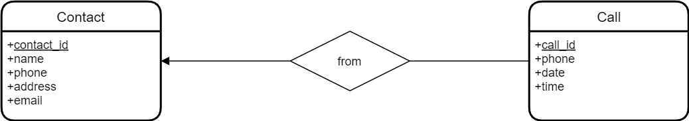

Modélisation Entité-Association
- Modèle de données relationnel (ou modèle relationnel)
- Modèle Entité-Association (ou Modèle EA)
- Exemples
Modèle Relationnel
- Relation (table) : table à deux dimensions, ensemble (et non liste) de tuples
- Attributs : colonnes de la table, champs
- Schéma :
Movies(title, year, length, filmType) - Tuples : lignes dans la table, enregistrements
- Domaines : types
Exemple de Table (Base de Données Monde)
Table : country (données d'exemple, triées par nom de pays)
Terminologie
- Entité : Quelque chose d'intérêt pour la communauté des utilisateurs de la
base de données.
- clients, pièces, localisations géographiques
- Colonne : Un élément de données individuel stocké dans une table.
- Ligne : Un ensemble de colonnes qui, ensemble, décrivent complètement une entité ou une action sur une entité. Aussi appelé un enregistrement.
- Table : Un ensemble de lignes, conservées soit en mémoire (non persistante) soit sur un stockage permanent (persistant).
- Ensemble de résultats : Un autre nom pour une table non persistante, généralement le résultat d'une requête SQL.
- Clé primaire : Une ou plusieurs colonnes pouvant être utilisées comme identifiant unique pour chaque ligne d'une table.
- Clé étrangère : Une ou plusieurs colonnes pouvant être utilisées ensemble pour identifier une ligne unique dans une autre table.
Étapes pour créer une nouvelle base de données
-
Modèles Conceptuels et Logiques : modéliser (ou concevoir) la base de données au niveau conceptuel et logique
- nous pouvons utiliser la notation traditionnelle ERD, ou
- la notation UML, ou
- d'autres notations notation.md
- le modèle conceptuel est très général, comme une première ébauche, se concentrant uniquement sur les entités et les associations
- le modèle logique ajoute des types de données et des contraintes au modèle conceptuel
-
Modèle de Données Relationnel, aussi appelé Modèle Physique : convertir le modèle logique en modèle de données relationnel
- nous pourrions utiliser d'autres modèles de données, tels que le modèle objet-relationnel ou d'autres modèles non relationnels (OO, NoSQL, ...)
- le modèle relationnel est le modèle le plus courant, et il ne peut pas être ignoré lors de l'apprentissage des bases de données
-
Création d'Instance de Base de Données : générer les instructions SQL nécessaires
CREATE TABLEet autres pour créer une instance de base de données, et la remplir avec des données -
Une fois la base de données créée, vous pouvez commencer à l'utiliser ( instructions
SELECT, mises à jour de données, ...)
Modèle Entité-Association (EA)
Notation Traditionnelle
- Ensembles d'entités : rectangles
- Ensembles de associations : losanges
- Attributs : ovales
- Flèches pour connecter les ensembles de associations aux ensembles
d'entités :
- triangle noir plein : au plus 1
- triangle rond ouvert ou triangle transparent : exactement 1
- pas de flèches : plusieurs
- Clés primaires : noms d'attributs soulignés
Notation UML
- Entités : rectangles
- Associations : lignes entre les entités, éventuellement avec des étiquettes et des flèches directionnelles à côté des étiquettes
- Attributs : dans les rectangles des entités, sous les noms des entités
- Cardinalités pour connecter les associations aux entités :
- au plus 1 :
0..1 - exactement 1 :
1ou1..1 - plusieurs :
* - au moins 1 :
1..*
- au plus 1 :
- Clés primaires : attributs avec la contrainte
<<pk>> - Clés étrangères (dans les diagrammes physiques uniquement) : attributs
avec la contrainte
<<fk>> - Contrainte de non-nullité : cercle avant le nom de l'attribut
Base de Données de Contacts
Notation Traditionnelle

Autre Notation Traditionnelle

Notation UML